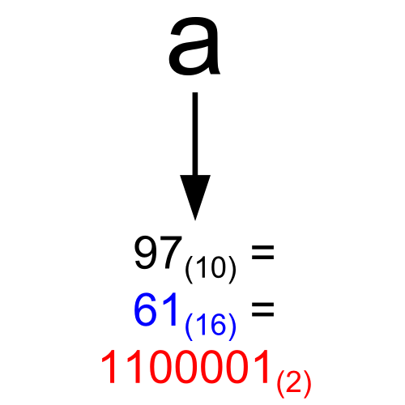
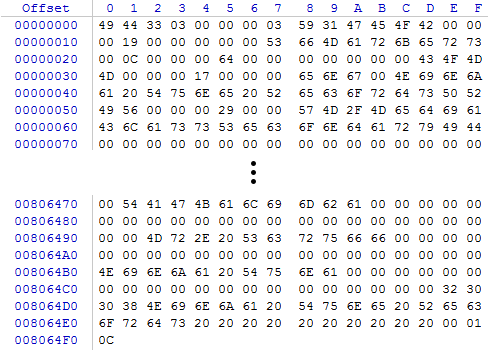
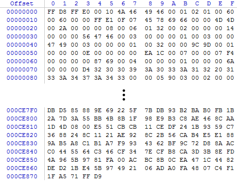
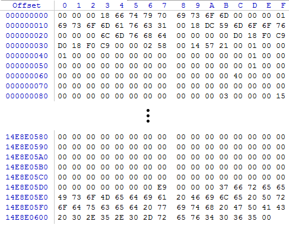

Licenca
To delo je na voljo pod pogoji slovenske licence Creative Commons 2.5:
priznanje avtorstva - nekomercialno - deljenje pod enakimi pogoji.
Celotna licenca je na voljo na spletu na naslovu http://creativecommons.org/licenses/by-nc-sa/2.5/si/. V skladu s to licenco je dovoljeno vsakemu uporabniku delo razmnoževati, distribuirati, javno priobčevati, dajati v najem in tudi predelovati, vendar samo v nekomercialne namene in ob pogoju, da navede avtorja oziroma avtorje in izdajatelja tega dela. Če uporabnik delo predela, kar pomeni, da ga spremeni, preoblikuje, prevede ali uporabi to delo v svojem delu, lahko predelavo dela ponudi na voljo le pod pogoji, ki so enaki pogojem iz te licence oziroma pod enako licenco.

Zapis neštevilskih podatkov
Naj še enkrat na tem mestu ponovimo, da v računalniku lahko hranimo in obdelujemo le dvojiške vrednosti 0 in 1. Zato moramo vse podatke zapisati le z 0 in 1. Kaj pa so to vsi podatki? To so črke, slike, zvok, cela števila, realna števila (pozor, tudi vejico in njeno mesto je treba nekako zapisati z 0 in 1). Za zgled si vzemimo barve. Barve velikokrat zapišemo kot mešanico rdeče, zelene in modre. Takemu zapisu pravimo zapis v RGB (Red, Green, Blue). Za vsako komponento dodelimo 8 bitov in barvo zapišemo kot zaporedje bitov oz. šestnajstiških števk.
Klikni na posamezno barvo in si oglej, kako izgledata njen desetiški in šestnajstiški zapis.
črna (black) bela (white) rdeča (red) zelena (green) modra (blue) rumena (yellow) sinja (cyan) škrlatna (magenta) Desetiški zapis (R,G,B) Šestnajstiški (RRGGBB)
Nekaj primerov neštevilskih podatkov
|
Črka »a«  |
Zvok  |
|
Slika  |
Video  |
Na zgornjih treh slikah je prikazano urejanje treh datotek z zvočno, video in slikovno vsebino v programu WinHex, enem izmed t.i. šestnajstiških urejevalnikov (ang. hex editor). Ti urejevalniki zaporedje ničel in enic, ki sestavlja datoteko, prikažejo v kompaktnejšem šestnajstiškem zapisu. Slike prikazujejo začetke in konce datotek. Ali bi iz slik uspel razbrati dolžino datotek?